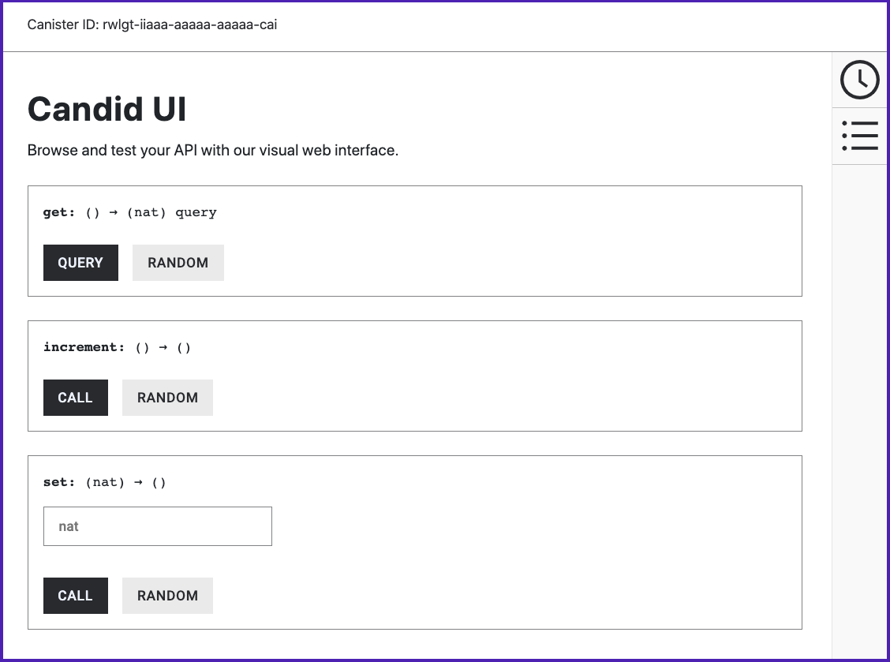

增加一个自然数
在本教程中，您将编写一个程序来创建单个参与者并提供一些基本函数来增加计数器并说明值的持久性。
在本教程中，actor 被命名为 Counter。
该程序使用 currentValue 变量来包含一个表示计数器当前值的自然数。
该程序支持以下函数调用:
-
increment函数调用更新当前值，将其递增 1（无返回值）。 -
get函数调用查询并返回计数器的当前值。 -
set函数调用将当前值更新为您指定为参数的任意数值。
本教程提供了一个简单示例，说明如何通过调用已部署容器智能合约上的函数来增加计数器。 通过多次调用函数递增和查询计数器值，您可以验证变量状态（即两次调用之间的变量值）是否保持不变。
创建一个新项目
要为本教程创建一个新的项目目录:
-
如果您还没有打开一个终端外壳，请在您的本地计算机上打开一个终端外壳。
-
更改为您用于 Internet Computer 项目的文件夹（如果您正在使用一个）。
-
通过运行以下命令创建一个新项目:
dfx new my_counter该命令为您的项目创建一个新的
my_counter项目。 -
通过运行以下命令切换到您的项目目录:
cd my_counter
修改默认配置
您已经看到创建一个新项目会在您的项目目录中添加一个默认的 dfx.json 配置文件。
在本教程中，您将修改默认设置，为项目中的主程序使用不同的名称。
修改 dfx.json 配置文件:
-
在文本编辑器中打开
dfx.json配置文件，并将默认的main设置从main.mo更改为increment_counter.mo。例如:
"main": "src/my_counter/increment_counter.mo",对于本教程，将源文件的名称从
main.mo更改为increment_counter.mo只是说明了dfx.json配置文件中的设置如何确定要编译的源文件。在更复杂的 dapp 中，您可能有多个具有依赖关系的源文件，您需要使用
dfx.json配置文件中的设置来管理这些源文件。 在这样的场景中——在你的“dfx.json”文件中定义了多个容器智能合约和程序——拥有多个名为“main.mo”的文件可能会令人困惑。您可以保留其余的默认设置。
-
保存更改并关闭
dfx.json文件以继续。 -
通过运行以下命令，将源代码目录`src
中的主程序文件的名称更改为与dfx.json`配置文件中指定的名称匹配mv src/my_counter/main.mo src/my_counter/increment_counter.mo
修改默认程序
到目前为止，您只更改了项目的主程序的名称。
下一步是修改 src/my_counter/increment_counter.mo 文件中的代码，定义一个名为 Counter 的 actor，并实现 increment、get 和 set 函数。
修改默认模板源代码:
-
如果需要，请检查您是否仍在项目目录中。
-
在文本编辑器中打开
src/my_counter/increment_counter.mo文件并删除现有内容。 -
将以下示例代码复制并粘贴到
increment_counter.mo文件中:// Create a simple Counter actor. actor Counter { stable var currentValue : Nat = 0; // Increment the counter with the increment function. public func increment() : async () { currentValue += 1; }; // Read the counter value with a get function. public query func get() : async Nat { currentValue }; // Write an arbitrary value with a set function. public func set(n: Nat) : async () { currentValue := n; }; }让我们仔细看看这个示例程序
-
你可以看到这个例子中的
currentValue变量声明包含了stable关键字来指示状态——可以设置、递增和检索的值——持续存在。该关键字确保程序升级时变量的值不变。
-
currentValue变量的声明还指定它的类型是自然数（Nat）。 -
该程序包括两种公共更新方法——
increment和`set` 函数——以及一种查询方法——get函数。
有关稳定和灵活变量的更多信息，请参阅稳定变量和升级方法link:../../language-guide/motoko{outfilesuffix }[Motoko 编程语言指南]。
有关查询和更新之间差异的更多信息，请参阅查询和更新方法 in link:../concepts/canisters-code{outfilesuffix }#canister-state[容器包括程序和状态]。
-
-
保存更改并关闭文件以继续。
启动本地容器执行环境
在构建“my_counter”项目之前，您需要连接到模拟 Internet Computer 区块链的本地容器执行环境或连接到 Internet Computer 区块链主网。
启动本地容器执行环境需要一个 dfx.json 文件，因此您应该确保您位于项目的根目录中。
对于本教程，您应该有两个独立的终端 shell，以便您可以在一个终端中启动和查看网络操作并在另一个终端中管理您的项目。
启动本地容器执行环境:
-
在本地计算机上打开一个新的终端窗口或选项卡。
-
如有必要，导航到项目的根目录。
-
您现在应该打开了两个终端。
-
您应该将 project 目录 作为您的 current 工作目录。
-
-
通过运行以下命令在您的计算机上启动本地容器执行环境:
dfx start启动本地容器执行环境后，终端会显示有关网络操作的消息。
-
让显示网络操作的终端保持打开状态，然后将注意力转移到创建新项目的原始终端。
注册、构建和部署 dapp
连接到在您的开发环境中运行的本地容器执行环境后，您可以在本地注册、构建和部署您的 dapp。
要在本地部署 dapp:
-
如果需要，请检查您是否仍在项目的根目录中。
-
通过运行以下命令注册、构建和部署您的 dapp:
dfx deploydfx deploy命令输出显示有关它执行的操作的信息。
在已部署的容器智能合约上调用方法
成功部署容器智能合约后，您可以模拟最终用户调用容器提供的方法。
在本教程中，您调用 get 方法来查询计数器的值，调用 increment 方法在每次调用时递增计数器，并调用 set 方法来传递参数以更新 与您指定的任意值相反。
要在已部署的容器智能合约上测试调用方法:
-
运行以下命令调用
get函数，该函数读取已部署容器上的currentValue变量的当前值:dfx canister call my_counter get该命令将
currentValue变量的当前值返回为零:(0 : nat)
-
运行以下命令调用
increment函数，将已部署容器上的currentValue变量的值加一:dfx canister call my_counter increment这个命令增加变量的值——改变它的状态——但不返回结果。
-
重新运行以下命令以获取已部署容器上的
currentValue变量的当前值:dfx canister call my_counter get该命令将
currentValue变量的更新值返回为 1:(1 : nat)
-
运行其他命令来尝试调用其他方法和使用不同的值。
例如，尝试类似以下的命令来设置和返回计数器值:
dfx canister call my_counter set '(987)' dfx canister call my_counter get这会将
currentValue的更新值返回为 987。 运行附加命令dfx canister call my_counter increment dfx canister call my_counter get返回递增的
currentValue988。
在浏览器中测试功能
容器接口描述语言（通常称为 Candid 或更一般地称为 IDL）为指定容器智能合约的签名提供了一种通用语言。 Candid 为您提供了一种统一的方式来与用不同语言编写或使用不同工具访问的容器智能合约进行交互。 例如，无论底层程序是原生 Rust、JavaScript 还是 Motoko，Candid 都能提供一致的服务视图。 Candid 还启用了不同的工具——例如`dfx` 命令行界面和网络神经系统 dapp——来共享服务的通用描述。
基于 actor 的类型签名，Candid 还提供了一个 Web 界面，允许您调用容器函数进行测试和调试。
使用 dfx deploy 或 dfx canister install 命令在本地容器执行环境中部署项目后，您可以在浏览器中访问 Candid Web 界面端点。
此 Web 界面 — Candid UI — 以表单形式公开服务描述，使您无需编写任何前端代码即可快速查看和测试功能并尝试输入不同的数据类型。
要使用 Candid Web 界面测试容器功能:
dfx canister id __Candid_UI 命令查找与当前项目关联的 Candid UI 容器标识符。+
dfx canister id __Candid_UI+ 该命令显示 Candid UI 的容器标识符，输出类似于以下内容:
+
r7inp-6aaaa-aaaaa-aaabq-cai
+ . 复制 Candid UI 容器标识符，使其在剪贴板中可用。 . 如果您已停止本地容器执行环境，请通过运行以下命令在本地重新启动它:
+
dfx start --background-
打开浏览器并导航到
dfx.json配置文件中指定的地址和端口号。默认情况下，本地容器执行环境绑定到`127.0.0.1:8000`地址和端口号。
-
将所需的
canisterId参数和dfx canister id __Candid_UI命令返回的 Candid UI 容器标识符添加到 URL。例如，完整的 URL 应该类似于以下内容，但带有由
dfx canister id __Candid_UI命令返回的`CANDID-UI-CANISTER-IDENTIFIER`:http://127.0.0.1:8000/?canisterId=<CANDID-UI-CANISTER-IDENTIFIER>
例如，对于 Candid UI 的示例容器标识符，如上所示，可能如下所示:
http://127.0.0.1:8000/?canisterId=r7inp-6aaaa-aaaaa-aaabq-cai
然后，浏览器会显示一个表单供您指定容器标识符或选择 Candid 描述 (
.did) 文件。 请注意，此字段是指您要与之交互的容器的容器标识符（与我们在上一步中使用的 Candid UI 的容器标识符相反）。 -
在 Provide a canister ID 字段中指定要测试的容器的容器标识符，然后单击 Go 以显示服务描述。
如果您不确定要使用哪个容器标识符，可以运行
dfx canister id命令来查找特定容器名称的标识符。 例如，要获取名为my_counter的容器的容器标识符，您可以使用:dfx canister id my_counter
-
查看 dapp 中定义的函数调用和类型列表。
-
为函数键入适当类型的值或单击 Random 生成值，然后单击 Call 或 Query 以查看结果。
请注意，根据数据类型，Candid 界面可能会显示用于测试功能的其他配置设置。 例如，如果一个函数接受一个数组，您可能需要在输入值之前指定数组中的项目数。
